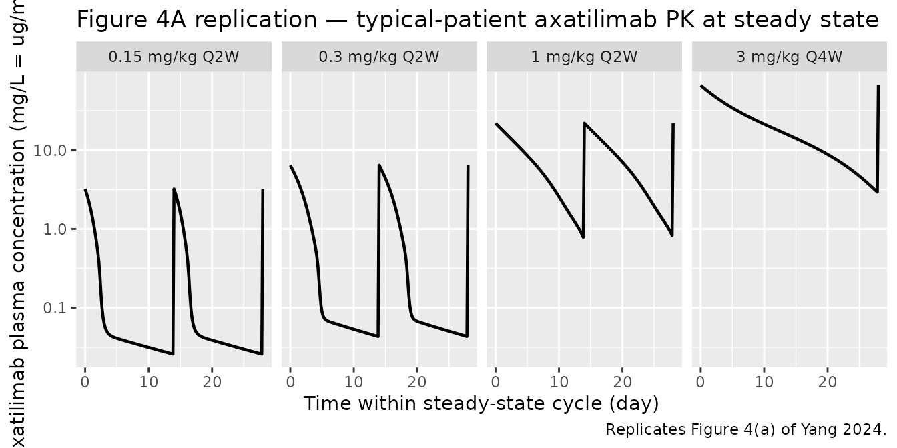
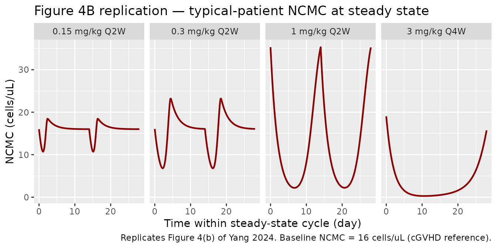
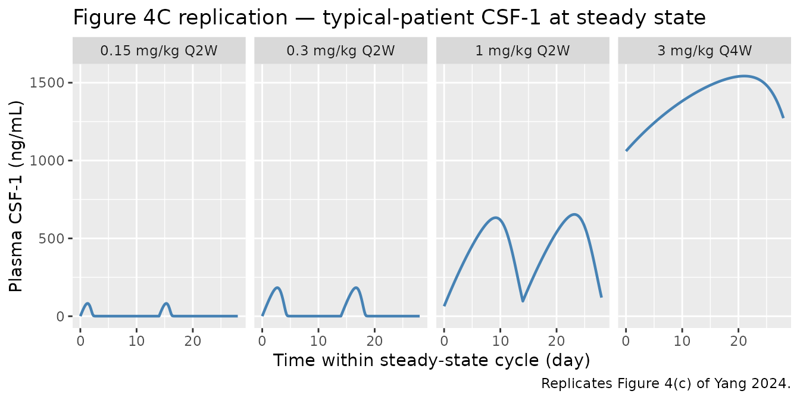
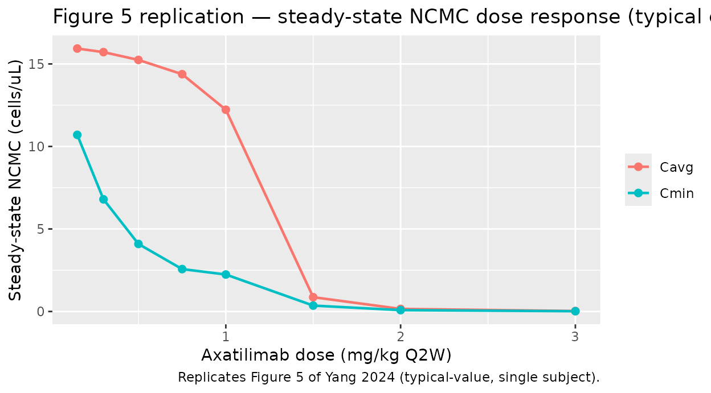

Axatilimab semimechanistic PK/PD model (Yang 2024)
Source:vignettes/articles/Yang_2024_axatilimab.Rmd
Yang_2024_axatilimab.RmdModel and source
- Citation: Yang Y, Sokolov V, Volkova A, et al. Semimechanistic Population PK/PD Modeling of Axatilimab in Healthy Participants and Patients With Solid Tumors or Chronic Graft-Versus-Host Disease. Clin Pharmacol Ther. 2025;117(3):704-714. doi:10.1002/cpt.3503
- Article: https://doi.org/10.1002/cpt.3503 — Yang et al., Clin Pharmacol Ther 117(3):704-714, 2025 (PubMed PMID 39704205).
- Supplemental MLXTRAN code: open-access supplement bundled with the article.
This model is a semimechanistic population PK/PD model that integrates axatilimab pharmacokinetics with the dynamics of four pharmacodynamic biomarkers:
- CSF-1 — the cytokine ligand for CSF-1R; rises sharply during axatilimab dosing as receptor blockade reduces CSF-1 clearance.
- NCMC — nonclassical CD14+/CD16++ monocytic cell count; the efficacy biomarker, decreased by axatilimab via CSF-1R signaling blockade.
- AST and CPK — safety / liver-and-muscle enzyme biomarkers, predicted to rise as Kupffer-cell macrophages depleted by axatilimab no longer clear circulating enzymes.
The PK structure is a two-compartment IV disposition model with
parallel linear and CSF-1R-mediated saturable
elimination. Saturable clearance is parameterized as a
Hill-type fractional occupancy in which axatilimab and CSF-1 compete for
binding to CSF-1R (Cc_nM/Kd_PK raised to the Hill
coefficient Nh = 2.5).
Population
The pooled analysis dataset is 325 participants across four phase 1 / 1-2 / 2 trials:
| Study | Population | N |
|---|---|---|
| SNDX-6352-0001 | Healthy adults | 14 |
| SNDX-6352-0502 | Advanced solid tumors | 33 |
| SNDX-6352-0503 | cGVHD (phase 1/2) | 39 |
| AGAVE-201 | cGVHD (phase 2 pivotal) | 239 |
Demographics from Yang 2024 Table S3 (continuous) and Table S4 (categorical):
- Age: median 55 years (range 7-81); 7 cGVHD subjects were children aged 7-15.
- Body weight: median 73.6 kg (range 18.1-151).
- Sex: 39.4% female (n=128 / 325).
- Race: 82.5% White, 5.5% Asian, 4.3% Black, 1.8% Other, 5.8% Unknown.
- Baseline CSF-1: median 549 pg/mL (range 39-4690 pg/mL).
- Baseline NCMC: median 19 cells/μL (range 0-202).
- Baseline AST: median 28 U/L (range 11-164).
- Baseline CPK: median 63 U/L (range 13-1069).
- ADA (ever-positive): 40% overall (50% / 36% / 40% in healthy / cancer / cGVHD).
Doses ranged from 0.15 to 6 mg/kg IV, single-dose or every 2 / 4 weeks. The approved cGVHD dose is 0.3 mg/kg Q2W.
The same information is available programmatically via the model’s
population metadata
(readModelDb("Yang_2024_axatilimab")()$meta$population
after the model is loaded).
mod_meta <- readModelDb("Yang_2024_axatilimab")()$meta
str(mod_meta$population, max.level = 1)
#> List of 14
#> $ n_subjects : int 325
#> $ n_studies : int 4
#> $ age_range : chr "7-81 years (7 children aged 7-15 with cGVHD)"
#> $ age_median : chr "55 years"
#> $ weight_range : chr "18.1-151 kg"
#> $ weight_median : chr "73.6 kg"
#> $ sex_female_pct : num 39.4
#> $ race_ethnicity : Named num [1:5] 82.5 5.5 4.3 1.8 5.8
#> ..- attr(*, "names")= chr [1:5] "White" "Asian" "Black" "Other" ...
#> $ disease_state : chr "Pooled cohort: 14 healthy adults (SNDX-6352-0001), 33 adults with advanced or metastatic solid tumors (SNDX-635"| __truncated__
#> $ dose_range : chr "0.15 to 6 mg/kg IV; single dose, every 2 weeks (Q2W), or every 4 weeks (Q4W); 0.3 mg/kg Q2W is the approved cGVHD regimen."
#> $ regions : chr "Multi-regional (multi-center US-led trials; phase 1 healthy-volunteer study had EudraCT registration in Europe)."
#> $ n_observations :List of 5
#> $ n_observations_below_LOQ_pct: num 35.5
#> $ notes : chr "Baseline demographics from Yang 2024 Tables S3 and S4. ADA prevalence (ever-positive) 40% overall. Plasma axati"| __truncated__Source trace
Every ini() value in
inst/modeldb/specificDrugs/Yang_2024_axatilimab.R cites a
Yang 2024 Table 1 row in its trailing comment. The table below collects
the equations and parameter origins for review:
| Symbol / equation | Value | Source location |
|---|---|---|
Cc = central / vc (μg/mL) |
n/a | Yang 2024 Eq. 4 |
d/dt(central) = -CL*(1+kada*ADA)*Cc - Q*(Cc-Cp) - Vmax*C1*vc*MW_PK/1000 |
n/a | Yang 2024 Eq. 1 (with mg-based unit reformulation; see Errata note 3) |
d/dt(peripheral1) = Q*(Cc-Cp) |
n/a | Yang 2024 Eq. 2 |
C1 = (Cc_nM/Kd_PK)^Nh / (1 + (Cc_nM/Kd_PK)^Nh + CSF1/Kd_CSF1) |
n/a | Yang 2024 Eq. 3 |
d/dt(csf1) = ksyn_csf1 - kdeg_csf1*csf1 - Vmax*C2 |
n/a | Yang 2024 Eq. 5 |
ksyn_csf1 = kdeg_csf1*BL_CSF1 + Vmax*BL_C2 |
n/a | Yang 2024 Eq. 6 |
C2 = (CSF1/Kd_CSF1) / (1 + (Cc_nM/Kd_PK)^Nh + CSF1/Kd_CSF1) |
n/a | Yang 2024 Eq. 7 |
d/dt(ncmc) = ksyn_ncmc*C2 - kdeg_ncmc*ncmc |
n/a | Yang 2024 Eq. 8 |
ksyn_ncmc = kdeg_ncmc*BL_NCMC / BL_C2 |
n/a | Yang 2024 Eq. 9 |
d/dt(ast) and d/dt(cpk)
|
n/a | Yang 2024 Eqs. 10-11 (NCMC-driven indirect response) |
Vd |
3.48 L | Table 1 |
CL |
0.007 L/h | Table 1 |
Q |
0.015 L/h | Table 1 |
Vp |
2.64 L | Table 1 |
Vmax |
0.37 nM/h | Table 1 |
Kd_PK |
1.11 nM | Table 1 |
Nh (Hill) |
2.5 | Table 1 |
BL_CSF1 |
0.01 nM | Table 1 |
BL_NCMC |
16 cells/μL | Table 1 |
kdeg_CSF1 |
0.002 1/h | Table 1 |
kdeg_NCMC |
0.021 1/h | Table 1 |
kada (ADA effect on CL) |
0.489 | Table 1 (see Errata) |
BL_AST |
35.5 U/L | Table 1 |
Vmax_AST_NCMC |
0.011 1/h | Table 1 |
kdeg_AST |
0.002 1/h | Table 1 |
EC50_AST_NCMC |
11.8 cells/μL | Table 1 |
BL_CPK |
101 U/L | Table 1 |
Vmax_CPK_NCMC |
0.02 1/h | Table 1 |
kdeg_CPK |
0.001 1/h | Table 1 |
EC50_CPK_NCMC |
19.2 cells/μL | Table 1 |
Kd_CSF1 (fixed) |
0.048 nM | Yang 2024 Methods (Roussel 1988) |
| Body weight on Vd | β = 0.7, ref 73.6 kg | Table 1 |
| CSF-1 on CL | β = 0.912, ref 549 pg/mL | Table 1 |
| CSF-1 on BL_CSF1 | β = 0.656 | Table 1 |
| Cancer cohort on BL_NCMC | β = 1.22 | Table 1 |
| Healthy cohort on BL_NCMC | β = 0.618 | Table 1 |
| CPK on BL_NCMC | β = 0.376, ref 63 U/L | Table 1 |
Random effects (omega; squared in ini()) |
0.235, 1.09, 0.289, 0.187, 0.868, 0.464, 0.755 | Table 1 |
| Residual error (Cc, CSF1, NCMC add, NCMC prop, AST, CPK) | 0.375, 0.321, 0.977, 0.676, 0.324, 0.462 | Table 1 |
Errata
The following internal inconsistencies were detected during extraction. The model file uses the value most consistent with the final-model parameter table and the supplemental MLXTRAN code; the discrepancies are recorded here for traceability.
kadavalue contradiction (page 708 narrative vs Table 1, MLXTRAN, and the formal covariate-effect summary). Page 708 of the published article states “an ADA effect coefficient (kada) of 2.1 (relative standard error (RSE), 2.92%), indicating that axatilimab clearance increased by approximately 3.1-fold when ADA status was positive.” However, Table 1 listskada = 0.489(RSE 3.52%, 95% CI 0.455-0.522), the formal covariate-effect summary on page 710 reports a “50.6% (95% CI, 47.0-54.2) increase in CL” with positive ADA status, and the supplemental MLXTRAN code (Supplement 2) implementsCL * (1 + k_ada * ADACN)withk_ada = 0.489. The factor(1 + 0.489)gives a 48.9% CL increase, matching the 50.6% covariate-effect summary (the small difference is the additional contribution from baseline CSF-1 covariance). The model file useskada = 0.489as the canonical value; the page-708 “2.1 / 3.1-fold” statement is treated as a typographical error.Figure 3 CSF-1 covariate axis units. Figure 3 of the article labels the CSF-1 covariate axis as “ng/mL” with displayed 90th-percentile = 1060 and 10th-percentile = 325. Table S3 reports baseline CSF-1 in ng/L (= pg/mL) with overall median 549 (range 39-4690). The Figure 3 numerical values match pg/mL (=ng/L), not ng/mL — typical plasma CSF-1 / M-CSF concentrations are 100-2000 pg/mL, and 1060 ng/mL would be three orders of magnitude above physiologic. The model file’s
covariateData[[CSF1]]$unitsis pg/mL with reference value 549 pg/mL (matching Table S3, the dimensionally consistent interpretation).Unit reformulation of the Vmax amount-rate term. The published Eq. 1 uses
Ac(axatilimab amount in μg) and an explicitVd × MW_PK / convF_PKfactor withconvF_PK = 0.01/1.5(the supplement’sMW_PK = 150 kDarepresentation). The model file works in mg for thecentralandperipheral1amounts (soCc = central / vcis directly in mg/L = μg/mL), and the saturable-clearance amount-rate term is rewritten asVmax × C1 × vc × MW_PK / 1000(mg/h). This is mathematically equivalent to Yang 2024 Eq. 1 —Vmax × C1 × vcin (nmol/L/h × L) = nmol/h, andMW_PK / 1000(= 0.150 mg/nmol) converts nmol/h to mg/h.
Virtual cohort
The original individual-level data are not publicly available; the figures below use small typical-value virtual cohorts whose covariate values match the population medians or the paper-specific reference values.
make_typical <- function(dose_mg_kg, regimen, weight_kg = 75,
dis_cancer = 0L, dis_hv = 0L, ada_pos = 0L,
CSF1_pgmL = 549, CPK_UL = 63,
duration_days = 28, sample_h = 4) {
# Mass dose: dose_mg_kg * body weight (mg)
amt_mg <- dose_mg_kg * weight_kg
ii_h <- if (regimen == "Q2W") 24 * 14 else 24 * 28
end_h <- duration_days * 24
# Build event table: dose at t=0 (and addl as appropriate), Cc-typed observations
# over the simulation window so rxSolve can resolve the multi-DVID model.
n_doses <- floor(end_h / ii_h) + 1
events <- rxode2::et()
for (i in seq_len(n_doses)) {
events <- rxode2::et(events, amt = amt_mg, cmt = "central", evid = 1,
time = (i - 1) * ii_h)
}
events <- rxode2::et(events, seq(0, end_h, by = sample_h), cmt = "Cc")
events$WT <- weight_kg
events$CSF1 <- CSF1_pgmL
events$CPK <- CPK_UL
events$DIS_CANCER <- dis_cancer
events$DIS_HEALTHY <- dis_hv
events$ADA_POS <- ada_pos
events$regimen <- paste0(dose_mg_kg, " mg/kg ", regimen)
events
}Simulation
The model is loaded once and used in typical-value (no between-subject variability) form for all figure replications.
mod <- readModelDb("Yang_2024_axatilimab")() |> rxode2::zeroRe()Replicate Figure 4 — axatilimab + biomarker time courses by dose
Yang 2024 Figure 4 shows the steady-state time course over a single 28-day dosing interval for axatilimab Cc, NCMC, and CSF-1 at four regimens: 0.15 / 0.3 / 1 mg/kg Q2W and 3 mg/kg Q4W. The simulation below carries six dose intervals so the system has approached steady state, then reports the final 28-day window.
sim_one <- function(events) {
s <- rxode2::rxSolve(mod, events = events, returnType = "data.frame", keep = "regimen")
# Drop dose-row duplicates that have no Cc value
s |> dplyr::filter(!is.na(Cc))
}
# Pre-saturation: 12 weeks of repeated dosing followed by a 28-day window
fig4_events <- dplyr::bind_rows(
sim_one(make_typical(0.15, "Q2W", duration_days = 12 * 7)) |> dplyr::mutate(regimen = "0.15 mg/kg Q2W"),
sim_one(make_typical(0.30, "Q2W", duration_days = 12 * 7)) |> dplyr::mutate(regimen = "0.3 mg/kg Q2W"),
sim_one(make_typical(1.00, "Q2W", duration_days = 12 * 7)) |> dplyr::mutate(regimen = "1 mg/kg Q2W"),
sim_one(make_typical(3.00, "Q4W", duration_days = 12 * 7)) |> dplyr::mutate(regimen = "3 mg/kg Q4W")
)
#> ℹ omega/sigma items treated as zero: 'etalvc', 'etalcl', 'etalvmax', 'etalbl_csf1', 'etalbl_ncmc', 'etalbl_ast', 'etalbl_cpk'
#> ℹ omega/sigma items treated as zero: 'etalvc', 'etalcl', 'etalvmax', 'etalbl_csf1', 'etalbl_ncmc', 'etalbl_ast', 'etalbl_cpk'
#> ℹ omega/sigma items treated as zero: 'etalvc', 'etalcl', 'etalvmax', 'etalbl_csf1', 'etalbl_ncmc', 'etalbl_ast', 'etalbl_cpk'
#> ℹ omega/sigma items treated as zero: 'etalvc', 'etalcl', 'etalvmax', 'etalbl_csf1', 'etalbl_ncmc', 'etalbl_ast', 'etalbl_cpk'
# Restrict to the final 28-day window and re-zero time
fig4 <- fig4_events |>
dplyr::group_by(regimen) |>
dplyr::mutate(t_max = max(time)) |>
dplyr::filter(time >= t_max - 28 * 24) |>
dplyr::mutate(time_d = (time - (t_max - 28 * 24)) / 24) |>
dplyr::ungroup() |>
dplyr::mutate(
csf1_ngmL = csf1obs, # observation alias already in ng/mL
regimen = factor(regimen, levels = c("0.15 mg/kg Q2W", "0.3 mg/kg Q2W",
"1 mg/kg Q2W", "3 mg/kg Q4W"))
)
ggplot(fig4, aes(time_d, Cc)) +
geom_line(linewidth = 0.8) +
scale_y_log10() +
facet_wrap(~ regimen, nrow = 1) +
labs(x = "Time within steady-state cycle (day)",
y = "Axatilimab plasma concentration (mg/L = ug/mL)",
title = "Figure 4A replication — typical-patient axatilimab PK at steady state",
caption = "Replicates Figure 4(a) of Yang 2024.")
ggplot(fig4, aes(time_d, ncmc)) +
geom_line(linewidth = 0.8, colour = "darkred") +
facet_wrap(~ regimen, nrow = 1) +
labs(x = "Time within steady-state cycle (day)",
y = "NCMC (cells/uL)",
title = "Figure 4B replication — typical-patient NCMC at steady state",
caption = "Replicates Figure 4(b) of Yang 2024. Baseline NCMC = 16 cells/uL (cGVHD reference).")
ggplot(fig4, aes(time_d, csf1_ngmL)) +
geom_line(linewidth = 0.8, colour = "steelblue") +
facet_wrap(~ regimen, nrow = 1) +
labs(x = "Time within steady-state cycle (day)",
y = "Plasma CSF-1 (ng/mL)",
title = "Figure 4C replication — typical-patient CSF-1 at steady state",
caption = "Replicates Figure 4(c) of Yang 2024.")
Cross-check covariate-effect magnitudes (Figure 3 / Table 1)
Yang 2024 Table 1 reports baseline NCMC of 16 / 29.7 / 54.2 cells/μL
in cGVHD / healthy / cancer reference patients. The numbers below are
typical-value baseline NCMC (the ncmc state at t=0 with no
drug) for the three population indicators:
baseline_ncmc <- function(dis_cancer, dis_hv) {
ev <- rxode2::et(seq(0, 168, by = 24), cmt = "Cc")
ev$WT <- 75; ev$CSF1 <- 549; ev$CPK <- 63
ev$DIS_CANCER <- dis_cancer; ev$DIS_HEALTHY <- dis_hv; ev$ADA_POS <- 0
s <- rxode2::rxSolve(mod, ev, returnType = "data.frame")
s$ncmc[1]
}
tibble::tibble(
Population = c("cGVHD reference", "Healthy volunteer", "Advanced solid tumor"),
`BL_NCMC simulated (cells/uL)` = c(
baseline_ncmc(0L, 0L),
baseline_ncmc(0L, 1L),
baseline_ncmc(1L, 0L)
),
`Yang 2024 Table 1` = c(16, 29.7, 54.2)
) |> knitr::kable(digits = 2,
caption = "Baseline NCMC by population type (typical patient at median CSF-1 and CPK).")
#> ℹ omega/sigma items treated as zero: 'etalvc', 'etalcl', 'etalvmax', 'etalbl_csf1', 'etalbl_ncmc', 'etalbl_ast', 'etalbl_cpk'
#> ℹ omega/sigma items treated as zero: 'etalvc', 'etalcl', 'etalvmax', 'etalbl_csf1', 'etalbl_ncmc', 'etalbl_ast', 'etalbl_cpk'
#> ℹ omega/sigma items treated as zero: 'etalvc', 'etalcl', 'etalvmax', 'etalbl_csf1', 'etalbl_ncmc', 'etalbl_ast', 'etalbl_cpk'| Population | BL_NCMC simulated (cells/uL) | Yang 2024 Table 1 |
|---|---|---|
| cGVHD reference | 16.00 | 16.0 |
| Healthy volunteer | 29.68 | 29.7 |
| Advanced solid tumor | 54.20 | 54.2 |
ADA-positive CL effect (paper covariate summary: +50.6% CL when ADA = 1):
typical_cl <- function(ada) {
# Pull individual CL via a unit-volume dose (1 mg) and reading IPRED at first sample
ev <- rxode2::et(amt = 1, cmt = "central", evid = 1, time = 0) |>
rxode2::et(c(0, 0.001), cmt = "Cc")
ev$WT <- 75; ev$CSF1 <- 549; ev$CPK <- 63
ev$DIS_CANCER <- 0; ev$DIS_HEALTHY <- 0; ev$ADA_POS <- ada
s <- rxode2::rxSolve(mod, ev, returnType = "data.frame")
unique(s$cl)[1]
}
cl_neg <- typical_cl(0L)
#> ℹ omega/sigma items treated as zero: 'etalvc', 'etalcl', 'etalvmax', 'etalbl_csf1', 'etalbl_ncmc', 'etalbl_ast', 'etalbl_cpk'
cl_pos <- typical_cl(1L)
#> ℹ omega/sigma items treated as zero: 'etalvc', 'etalcl', 'etalvmax', 'etalbl_csf1', 'etalbl_ncmc', 'etalbl_ast', 'etalbl_cpk'
tibble::tibble(
ADA = c("Negative (ref)", "Positive"),
`Typical CL (L/h)` = c(cl_neg, cl_pos),
`Fractional change vs ADA-` = c(0, (cl_pos - cl_neg) / cl_neg)
) |> knitr::kable(digits = 4,
caption = "Linear CL by ADA status. Note: the model file's `cl` variable already carries the ADA factor.")| ADA | Typical CL (L/h) | Fractional change vs ADA- |
|---|---|---|
| Negative (ref) | 0.0070 | 0.000 |
| Positive | 0.0104 | 0.489 |
Steady-state hold check
With no axatilimab dose, the four biomarker states must hold at their individual baseline values indefinitely (or to numerical tolerance) — this is the standard endogenous-system invariant.
ss_ev <- rxode2::et(seq(0, 4000, by = 48), cmt = "Cc")
ss_ev$WT <- 75; ss_ev$CSF1 <- 549; ss_ev$CPK <- 63
ss_ev$DIS_CANCER <- 0; ss_ev$DIS_HEALTHY <- 0; ss_ev$ADA_POS <- 0
ss <- rxode2::rxSolve(mod, ss_ev, returnType = "data.frame")
#> ℹ omega/sigma items treated as zero: 'etalvc', 'etalcl', 'etalvmax', 'etalbl_csf1', 'etalbl_ncmc', 'etalbl_ast', 'etalbl_cpk'
ss_summary <- tibble::tibble(
Biomarker = c("csf1 (nM)", "ncmc (cells/uL)", "ast (U/L)", "cpk (U/L)"),
Min = c(min(ss$csf1), min(ss$ncmc), min(ss$ast), min(ss$cpk)),
Max = c(max(ss$csf1), max(ss$ncmc), max(ss$ast), max(ss$cpk)),
Target = c(0.01, 16, 35.5, 101)
)
knitr::kable(ss_summary, digits = 6,
caption = "Biomarker steady-state hold (no axatilimab dose, 4000 h simulation).")| Biomarker | Min | Max | Target |
|---|---|---|---|
| csf1 (nM) | 0.01 | 0.01 | 0.01 |
| ncmc (cells/uL) | 16.00 | 16.00 | 16.00 |
| ast (U/L) | 35.50 | 35.50 | 35.50 |
| cpk (U/L) | 101.00 | 101.00 | 101.00 |
Replicate Figure 5 — steady-state NCMC dose response (Q2W)
Figure 5 of Yang 2024 shows steady-state mean and trough NCMC
concentration vs dose for the Q2W regimen. The simulation below sweeps
0.15-3 mg/kg Q2W on a typical cGVHD patient and computes Cavg / Cmin
within the final dosing interval after 16 weeks of dosing (eight Q2W
cycles is sufficient for convergence given the NCMC turnover halflife
log(2) / 0.021 ≈ 33 h).
dose_sweep <- c(0.15, 0.3, 0.5, 0.75, 1, 1.5, 2, 3)
ncmc_metrics <- function(dose_mg_kg) {
ev_long <- make_typical(dose_mg_kg, regimen = "Q2W", duration_days = 16 * 7)
s <- rxode2::rxSolve(mod, ev_long, returnType = "data.frame") |>
dplyr::filter(!is.na(Cc))
end_h <- max(s$time)
s_final <- s |> dplyr::filter(time >= end_h - 14 * 24)
tibble::tibble(
dose = dose_mg_kg,
cavg = mean(s_final$ncmc),
cmin = min(s_final$ncmc)
)
}
fig5 <- purrr::map_dfr(dose_sweep, ncmc_metrics) |>
tidyr::pivot_longer(c(cavg, cmin), names_to = "metric", values_to = "ncmc") |>
dplyr::mutate(metric = recode(metric, cavg = "Cavg", cmin = "Cmin"))
#> ℹ omega/sigma items treated as zero: 'etalvc', 'etalcl', 'etalvmax', 'etalbl_csf1', 'etalbl_ncmc', 'etalbl_ast', 'etalbl_cpk'
#> ℹ omega/sigma items treated as zero: 'etalvc', 'etalcl', 'etalvmax', 'etalbl_csf1', 'etalbl_ncmc', 'etalbl_ast', 'etalbl_cpk'
#> ℹ omega/sigma items treated as zero: 'etalvc', 'etalcl', 'etalvmax', 'etalbl_csf1', 'etalbl_ncmc', 'etalbl_ast', 'etalbl_cpk'
#> ℹ omega/sigma items treated as zero: 'etalvc', 'etalcl', 'etalvmax', 'etalbl_csf1', 'etalbl_ncmc', 'etalbl_ast', 'etalbl_cpk'
#> ℹ omega/sigma items treated as zero: 'etalvc', 'etalcl', 'etalvmax', 'etalbl_csf1', 'etalbl_ncmc', 'etalbl_ast', 'etalbl_cpk'
#> ℹ omega/sigma items treated as zero: 'etalvc', 'etalcl', 'etalvmax', 'etalbl_csf1', 'etalbl_ncmc', 'etalbl_ast', 'etalbl_cpk'
#> ℹ omega/sigma items treated as zero: 'etalvc', 'etalcl', 'etalvmax', 'etalbl_csf1', 'etalbl_ncmc', 'etalbl_ast', 'etalbl_cpk'
#> ℹ omega/sigma items treated as zero: 'etalvc', 'etalcl', 'etalvmax', 'etalbl_csf1', 'etalbl_ncmc', 'etalbl_ast', 'etalbl_cpk'
ggplot(fig5, aes(dose, ncmc, colour = metric)) +
geom_line(linewidth = 0.8) +
geom_point(size = 2) +
labs(x = "Axatilimab dose (mg/kg Q2W)",
y = "Steady-state NCMC (cells/uL)",
colour = NULL,
title = "Figure 5 replication — steady-state NCMC dose response (typical cGVHD patient)",
caption = "Replicates Figure 5 of Yang 2024 (typical-value, single subject).")
PKNCA validation — single-dose axatilimab Cc
The article does not report a published NCA table for axatilimab, so the PKNCA block here functions as a functional check that the simulated profile produces dimensionally sensible AUC / Cmax under the 0.3 mg/kg single-dose regimen.
single_ev <- rxode2::et(amt = 22.5, cmt = "central", evid = 1, time = 0) |>
rxode2::et(c(0, 0.5, 1, 2, 4, 8, 12, 24, 48, 72, 96, 168, 240, 336),
cmt = "Cc")
single_ev$id <- 1L
single_ev$WT <- 75
single_ev$CSF1 <- 549
single_ev$CPK <- 63
single_ev$DIS_CANCER <- 0
single_ev$DIS_HEALTHY <- 0
single_ev$ADA_POS <- 0
single_ev$regimen <- "0.3 mg/kg single dose"
sim_sd <- rxode2::rxSolve(mod, single_ev, returnType = "data.frame", keep = "regimen") |>
dplyr::filter(!is.na(Cc)) |>
dplyr::mutate(id = 1L)
#> ℹ omega/sigma items treated as zero: 'etalvc', 'etalcl', 'etalvmax', 'etalbl_csf1', 'etalbl_ncmc', 'etalbl_ast', 'etalbl_cpk'
dose_df <- tibble::tibble(id = 1L, time = 0, amt = 22.5, regimen = "0.3 mg/kg single dose")
conc_obj <- PKNCA::PKNCAconc(sim_sd |> dplyr::select(id, time, Cc, regimen),
Cc ~ time | regimen + id,
concu = "mg/L", timeu = "hr")
dose_obj <- PKNCA::PKNCAdose(dose_df, amt ~ time | regimen + id, doseu = "mg")
intervals <- data.frame(
start = 0,
end = 336,
cmax = TRUE,
tmax = TRUE,
auclast = TRUE,
half.life = TRUE
)
nca_res <- PKNCA::pk.nca(PKNCA::PKNCAdata(conc_obj, dose_obj, intervals = intervals))
nca_res$result |>
dplyr::select(start, end, PPTESTCD, PPORRES) |>
knitr::kable(digits = 4,
caption = "Simulated single-dose 0.3 mg/kg axatilimab NCA, typical cGVHD patient.")| start | end | PPTESTCD | PPORRES |
|---|---|---|---|
| 0 | 336 | auclast | 294.2096 |
| 0 | 336 | cmax | 6.3808 |
| 0 | 336 | tmax | 0.0000 |
| 0 | 336 | tlast | 336.0000 |
| 0 | 336 | lambda.z | 0.0023 |
| 0 | 336 | r.squared | 0.9999 |
| 0 | 336 | adj.r.squared | 0.9998 |
| 0 | 336 | lambda.z.time.first | 168.0000 |
| 0 | 336 | lambda.z.time.last | 336.0000 |
| 0 | 336 | lambda.z.n.points | 3.0000 |
| 0 | 336 | clast.pred | 0.0392 |
| 0 | 336 | half.life | 305.1370 |
| 0 | 336 | span.ratio | 0.5506 |
Assumptions and deviations
-
Mechanism-specific compartment names. The biomarker
states
csf1,ncmc,ast,cpkdeliberately deviate from the canonical compartment-name list innaming-conventions.md(depot,central,peripheral1, etc.). They were chosen to match the variable names in Yang 2024 Eqs. 5, 8, 10, 11 and the supplemental MLXTRAN code; using the canonical names would obscure the one-to-one mapping with the published equations.nlmixr2lib::checkModelConventions()flags these as warnings (not errors). -
Initial conditions. All four biomarker states
(
csf1,ncmc,ast,cpk) are set to their per-individual baseline parameter values (BL_CSF1,BL_NCMC,BL_AST,BL_CPK). PK compartments start at zero (no endogenous axatilimab). -
Saturable-elimination unit reformulation (mg vs
μg). The supplemental MLXTRAN code carries
Acin μg and converts dose with a 1000× factor at theiv()macro. The nlmixr2lib model file works in mg directly so user-facing event tables can use mg without conversion; theVmax × C1 × vc × MW_PK / 1000term is mathematically equivalent to Yang 2024 Eq. 1 (Errata note 3). -
kada interpretation. The internal contradiction
documented in Errata note 1 was resolved by using the value consistent
with Table 1, the MLXTRAN supplement, and the formal covariate-effect
summary (
kada = 0.489). - CSF-1 covariate units. Pg/mL (not Figure 3’s mislabeled “ng/mL”); see Errata note 2.
- No FDR / lower-LOQ handling. The analysis dataset uses the M4 method to handle BLOQ samples (Beal 2001); since this vignette runs deterministic typical-value simulations, no BLOQ logic is needed.
- PKNCA stratification. A single regimen (0.3 mg/kg single dose) is shown; the published article does not report per-regimen NCA, so cross-comparison with paper values is not possible.
-
Reference-value documentation. Continuous
covariates (
WT,CSF1,CPK) use the overall pooled-cohort medians from Yang 2024 Table S3 (73.6 kg, 549 pg/mL, 63 U/L). The paper does not separately report cohort-stratified medians; using the overall median follows Yang 2024’s own statement that “continuous covariates were adjusted for the population median.”